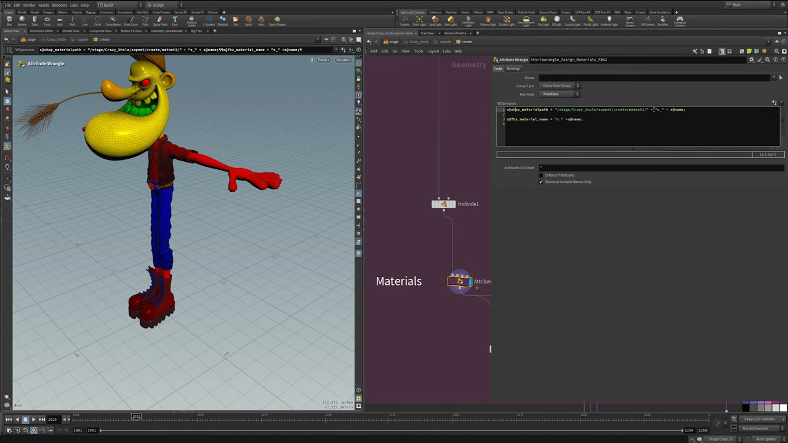
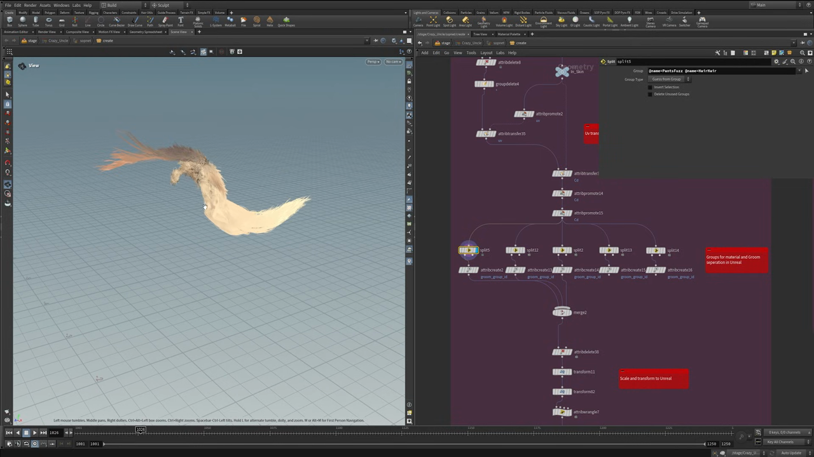
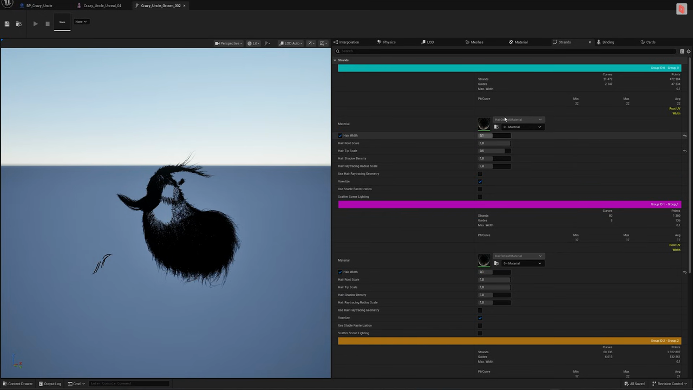

Houdini キャラクター制作 9 — APEX から Unreal Engine へ書き出す
出典: Character Creation 9 | Unreal Integration （SideFX 公式チュートリアル Create a Procedural Character の第9回・最終回 / 講師 Roy Kristoffersen さん / Houdini 21 / 13:28 / 英語）。 このページは、上記の動画を見ながら自分用にまとめた日本語の学習メモです。SideFX 公式の翻訳ではありません。 シリーズ全体は第0回にまとめています。
この回で扱うこと
シリーズ最終回です。APEX で作ったリグとアニメーションを Unreal Engine に持っていきます。 この回もチャプターが付いているので、それに沿ってまとめます。
| 時間 | チャプター |
|---|---|
| 00:00 | Overview（APEX → FBX） |
| 02:56 | Assign Materials |
| 04:53 | Export Unreal Group（groom の書き出し） |
| 07:59 | Final Overview（Unreal 側） |
1. APEX から FBX へ
第7回で作った
Scene Animate の結果を Scene Invoke に通します。
Scene Output Path には Crazy Uncle キャラクターの Base.rig の output と
Base.skel を指定します。
そこから「APEX Animation to Unreal FBX」の処理に入ります。
- ジオメトリを読み込みます
- ジオ・スケルトン・アニメーションをそれぞれアンパックします
Attribute Deleteで掃除します。 Unreal に送っても動かない余分なアトリビュートを落とすためで、 アニメーションが載っているスケルトン側にも同じ処理をします
Configure Clip Anim は必須
ここを通さないと ROP FBX Animation Output が動きません。 講師の方も「これが無いと動かない」と明言していました。設定するのは次の項目です。
- clip name
- sample rate
- clip range
- source sample rate
- source clip range
最後に三角化する
アンパックしたジオメトリの末尾に Divide（ネットワーク上の名前は tridivide1）を
入れています。
Unreal に持っていくとき、四角ポリゴンで問題が出ることがあるため、 最後に必ず三角化してから書き出すようにしている、とのことでした。 「そうしておけば確実に書き出せるとわかるから」という理由です。
2. 名前でマテリアルを割り当てる

ここが上手いと思ったところです。マテリアルを手で1つずつ割り当てるのではなく、
プリミティブの name からマテリアルのパスを組み立てています。
Attribute Wrangle（ノード名 Attribwrangle_Assign_Materials_FBX、Run Over は Primitives）の中身です。
s@shop_materialpath = "/stage/Crazy_Uncle/sopnet/create/matnet1/" + "s_" + s@name;
s@fbx_material_name = "s_" + s@name;これだけで、name が Head のプリミティブには s_Head マテリアルが、
Vest には s_Vest が割り当たります。
matnet の中に vest・head・straw・cap・laces といった名前のマテリアルを用意しておけば、
名前を揃えるだけで全部つながります。
なぜ派手な色なのか
上の画像のとおり、頭が黄色、腕と胴が赤、ズボンが青という強烈な配色になっています。 これには理由がありました。
マテリアルが正しく割り当たっているかを目で確認するためです。 Houdini 側と Unreal 側で同じ色が同じ場所に出ていれば、 割り当てが正しく引き継がれたと確信できます。 Unreal に持っていったあとで作り直す前提の、確認用の色です。
最後に Bone Deform を足して動作を確認してから、ディスクに保存します。
3. groom を Unreal 用に書き出す

キャラクター本体とは別に、髪とヒゲを Alembic で書き出します。
UV を揃える
- キャラクター全体を読み込み、
Splitで髪とキャラクターを分けます Attribute DeleteとGroup Deleteで掃除します- ジオ側は必要なものだけ残します。body・head・shirt・pants の4つです
- キャラクターの UV を
Attribute Promoteで vertex から primitive に昇格させます - それを
Attribute Transferで groom 側に転送します
キャラクターの UV と groom の UV が一致していると、 Unreal 側で正しく結び付きます。 ネットワークにも「Uv transfer」という付箋が貼られていました。
groom_group_id を作る
Unreal はいくつかのアトリビュートを期待していて、そのひとつが
groom_group_id です。
Split で毛の束を分け、それぞれに Attribute Create で
groom_group_id を 0、1、2… と振っていきます。
ネットワークには「Groups for material and Groom seperation in Unreal」
という付箋が貼られていて、実際には5組の Split と Attribute Create が並んでいました。
これをやっておくと、Unreal 側で束ごとに別のマテリアルを当てたり、 本数を個別に減らしたりできます。ゲーム用にプロキシ化するときに効いてきます。
軸とスケールを合わせる
Mergeでまとめて、もう一度Attribute Deleteで掃除しますTransformでスケールを合わせます- もう一段
Transformで Y 軸と Z 軸の入れ替えと反転を行います。 付箋には「Scale and transform to Unreal」とありました widthプロパティを設定します- Alembic で書き出します
この段階の Houdini ビューポートでは、軸を入れ替えたせいで とても奇妙な向きになります。ただしこれが Unreal では正しい向きになります。
4. Unreal 側

キャラクター
- Unreal で Blueprint を作り、スケルタルメッシュを入れます
- FBX としてインポートします
- マテリアルは Houdini で付けた派手な色のまま入ってくるので、Unreal 側で作り直します
スキニングは Houdini とまったく同じ状態で入ります。 「何も違わない、完全に同じ」と言われていました。
Groom Asset
上の画像が Unreal の Groom Asset エディタです。
Houdini で振った groom_group_id が、そのまま Group ID 0 / 1 / 2 として
分かれて入っているのがわかります。
| グループ | ストランド数 | ポイント数 |
|---|---|---|
| Group ID 0 | 21,472 | 472,384 |
| Group ID 1 | 80 | 1,360 |
| Group ID 2 | 60,136 | 1,322,807 |
グループごとに Material、Hair Width、Hair Root Scale、Hair Tip Scale、 Hair Shadow Density などを個別に設定できます。 Interpolation のタブではカーブの間引きができるので、 本数を減らして軽くすることも可能です。
最後に Binding を作って、groom と FBX のキャラクターを結び付けます。
アニメーションを適用する
Houdini から書き出したアニメーション（動画では crazy uncle pose 3）をインポートして、
キャラクターに適用します。ポーズでもアニメーションでも同じ手順です。
ライトを組んで Houdini の見た目に近づけたところで、 ヒゲが付いたキャラクターがリアルタイムで動く状態になります。
シリーズを通しての感想
最終回の締めくくりで、講師の方はこう言っていました。
Houdini なら、アニメーションに関することを全部 Houdini の中でやったうえで、 ゲームに持っていくか、リアルタイムでレンダリングするか、 あるいは最高の品質を求めて Karma でレンダリングするか、 その全部を選べます。これが Houdini のキャラクター制作を これほど多様で心地よいものにしている理由です。
また「話が速く進みすぎた部分もあると思うが、HIP ファイルが SideFX からダウンロードできるので、 ノードを1つずつ辿ってみてほしい」とも言われていました。 確かに9本で3時間強という尺なので、実際に触るのが一番だと思います。
この回のまとめ
Scene Invokeでジオ・スケルトン・アニメーションをアンパックしてから FBX にしますConfigure Clip Animを通さないと FBX のアニメーション出力が動きません- Unreal は四角ポリゴンで問題が出ることがあるので、最後に
Divideで三角化します - マテリアルは
nameからパスを組み立てて一括で割り当てられます - 確認用マテリアルをわざと派手な色にして、割り当てが引き継がれたか目で確かめます
- groom は UV をキャラクターと揃え、
groom_group_idで束を分けておくと Unreal 側で個別に扱えます - 書き出し前に
Transformで Y/Z の入れ替えと反転を行います
これでシリーズは完結です。全10回の一覧は第0回のメモにあります。